Differential Gene Expression (DGE) Analysis
Last updated: 2024-01-27
Checks: 6 1
Knit directory: mecfs-dge-analysis/
This reproducible R Markdown analysis was created with workflowr (version 1.7.1). The Checks tab describes the reproducibility checks that were applied when the results were created. The Past versions tab lists the development history.
The R Markdown file has unstaged changes. To know which version of
the R Markdown file created these results, you’ll want to first commit
it to the Git repo. If you’re still working on the analysis, you can
ignore this warning. When you’re finished, you can run
wflow_publish to commit the R Markdown file and build the
HTML.
Great job! The global environment was empty. Objects defined in the global environment can affect the analysis in your R Markdown file in unknown ways. For reproduciblity it’s best to always run the code in an empty environment.
The command set.seed(20230618) was run prior to running
the code in the R Markdown file. Setting a seed ensures that any results
that rely on randomness, e.g. subsampling or permutations, are
reproducible.
Great job! Recording the operating system, R version, and package versions is critical for reproducibility.
Nice! There were no cached chunks for this analysis, so you can be confident that you successfully produced the results during this run.
Great job! Using relative paths to the files within your workflowr project makes it easier to run your code on other machines.
Great! You are using Git for version control. Tracking code development and connecting the code version to the results is critical for reproducibility.
The results in this page were generated with repository version b9e1038. See the Past versions tab to see a history of the changes made to the R Markdown and HTML files.
Note that you need to be careful to ensure that all relevant files for
the analysis have been committed to Git prior to generating the results
(you can use wflow_publish or
wflow_git_commit). workflowr only checks the R Markdown
file, but you know if there are other scripts or data files that it
depends on. Below is the status of the Git repository when the results
were generated:
Ignored files:
Ignored: .DS_Store
Ignored: .Rhistory
Ignored: .Rproj.user/
Ignored: output/.DS_Store
Ignored: output/batch-correction-limma/
Ignored: output/condition-analysis.RData
Untracked files:
Untracked: analysis/complex-upset.Rmd
Untracked: analysis/decoupler.Rmd
Untracked: data/MECFS_RNAseq_metadata_2024_01_19.csv
Untracked: omnipathr-log/
Untracked: output/bysample_upset.png
Untracked: output/counts_vst_female.csv
Untracked: output/counts_vst_limma_female.csv
Untracked: output/gene_interest_upset.png
Untracked: output/res_aff_vs_unaff_df_genename_padj1.csv
Untracked: output/res_aff_vs_unaff_df_m_genename.csv
Untracked: output/res_aff_vs_unaff_df_m_genename_05.csv
Untracked: output/res_aff_vs_unaff_m.csv
Untracked: output/res_aff_vs_unaff_significant_all_samples.csv
Untracked: output/res_aff_vs_unaff_significant_females_only.csv
Untracked: trainee_updates_september.Rmd
Untracked: trainee_updates_september.pptx
Unstaged changes:
Modified: analysis/condition-analysis.Rmd
Modified: code/helpers.R
Modified: data/MECFS_RNAseq_metadata_2023_08_18.csv
Modified: data/RNAseq Variants of Interest List_V2.csv
Modified: data/RNAseq Variants of Interest List_V2.xlsx
Modified: output/counts_vst.csv
Modified: output/counts_vst_limma.csv
Modified: output/res_aff_vs_unaff.csv
Modified: output/res_aff_vs_unaff_df_genename_05.csv
Modified: output/res_aff_vs_unaff_genename.csv
Note that any generated files, e.g. HTML, png, CSS, etc., are not included in this status report because it is ok for generated content to have uncommitted changes.
These are the previous versions of the repository in which changes were
made to the R Markdown (analysis/condition-analysis.Rmd)
and HTML (docs/condition-analysis.html) files. If you’ve
configured a remote Git repository (see ?wflow_git_remote),
click on the hyperlinks in the table below to view the files as they
were in that past version.
| File | Version | Author | Date | Message |
|---|---|---|---|---|
| html | b9e1038 | sdhutchins | 2023-09-26 | Remove initial analysis. |
| Rmd | 7ef758f | sdhutchins | 2023-09-26 | Add GO over-representation analysis. |
| Rmd | c891600 | sdhutchins | 2023-08-29 | Add ancestry to metadata. |
| Rmd | f25b2ec | sdhutchins | 2023-08-19 | Filter out male samples due to PCA. |
| html | 05f5502 | sdhutchins | 2023-08-16 | Build site. |
| Rmd | f22d1e2 | sdhutchins | 2023-08-16 | Add new experiment designs. |
DGE Analysis Setup
Ensure you have all necessary libraries installed and load the helper code.
At a later date, renv will be integrated to ensure
reproducibility of this analysis.
Use the below code to install these packages:
# Install packages from CRAN
install.packages(c("tidyverse", "RColorBrewer", "pheatmap", "gprofiler2", "plotly", "ggupset"))
# Install packages from Bioconductor
install.packages("BiocManager")
BiocManager::install(c("DESeq2", "genefilter", "limma", "biomaRt", "mygene"))library(tidyverse) # Available via CRAN
library(DESeq2) # Available via Bioconductor
library(RColorBrewer) # Available via CRAN
library(pheatmap) # Available via CRAN
library(genefilter) # Available via Bioconductor
library(limma) # Available via Bioconductor
library(gprofiler2) # Available via CRAN
library(biomaRt) # Available via Bioconductor
library(plotly) # Available via CRAN
library(ggpubr)
library(rmarkdown)
library(ggupset)
library(clusterProfiler)
library(DOSE)
library(org.Hs.eg.db) # Available via Bioconductor
library(UpSetR)
library(ggrepel)Data Import
We will be importing counts data from the star-salmon pipeline and our metadata for the project which is hosted on Box. This also ensures data is properly ordered by sample id.
counts <- read_tsv("data/star-salmon/salmon.merged.gene_counts_length_scaled.tsv")
# Import variants of interest
vars_of_interest <- read_csv("data/RNAseq Variants of Interest List_V2.csv")
genes_of_interest <- unique(vars_of_interest$Gene)
genes_of_interest <- genes_of_interest[!is.na(genes_of_interest)]
# Use first column (gene_id) for row names
counts <- data.frame(counts, row.names = 1)
counts$Ensembl_ID <- row.names(counts)
drop <- c("Ensembl_ID", "gene_name")
gene_info <- counts[, drop]
counts <- counts[, !(names(counts) %in% drop)] # remove both columns
# Import metadata
sample_metadata <- read_csv("data/MECFS_RNAseq_metadata_2024_01_19.csv")
row.names(sample_metadata) <- sample_metadata$ID
# Assuming counts is your counts dataframe and sample_metadata is your metadata dataframe
# Call the function with the appropriate column names
counts <- rename_counts_columns(counts, sample_metadata, "ID", "RNA_Samples_id")
# Check that data is ordered properly
sample_metadata <- check_order(sample_metadata = sample_metadata, counts = counts)
genes_biomart <- retrieve_gene_info(values = gene_info$Ensembl_ID, filters = "ensembl_gene_id_version")DESeq2 Analysis
sample_metadata$Family <- factor(sample_metadata$Family)
sample_metadata$Affected <- factor(sample_metadata$Affected)
sample_metadata$Batch <- factor(sample_metadata$Batch)
sample_metadata$Sex <- factor(sample_metadata$Sex)
sample_metadata$Ancestry <- factor(sample_metadata$Ancestry)
#sample_metadata$Disease <- factor(sample_metadata$Disease)
sample_metadata$Category <- factor(sample_metadata$Category)
# Account for Family later but batch is accounted for
# Accounting for another factor seems to be an issue.
dds <- DESeqDataSetFromMatrix(countData = round(counts), colData = sample_metadata, design = ~ Batch + Affected)
# Pre-filtering: Keep only rows that have at least 10 reads total
keep <- rowSums(counts(dds)) >= 10
dds <- dds[keep, ]
# Remove male samples
male_samples <- c("LW001994", "LW001984", "LW001985")
# Create a logical vector to index the columns you want to keep
female_samples <- !(colnames(dds) %in% male_samples)
dds_female <- dds[, female_samples]
# Run DESeq function
dds <- DESeq(dds)
dds_female <- DESeq(dds_female)
# Normalize gene counts for differences in seq. depth/global differences
counts_norm <- counts(dds, normalized = TRUE)
counts_norm_female <- counts(dds_female, normalized = TRUE)Data transformation and visualization
Perform count data transformation by variance stabilizing transformation (vst) on normalized counts.
vsd <- vst(dds, blind = FALSE)
vsd_female <- vst(dds_female, blind = FALSE)Batch correction with limma
counts_vst <- assay(vsd)
write.csv(counts_vst, file = "output/counts_vst.csv")
mm <- model.matrix(~ Batch + Affected, colData(vsd))
counts_vst_limma <- limma::removeBatchEffect(counts_vst, batch = vsd$Batch, design = mm)Coefficients not estimable: batch1 batch2 write.csv(counts_vst_limma, file = "output/counts_vst_limma.csv")
vsd_limma <- vsd
assay(vsd_limma) <- counts_vst_limma
# For just female samples
counts_vst_female <- assay(vsd_female)
write.csv(counts_vst_female, file = "output/counts_vst_female.csv")
mm <- model.matrix(~ Batch + Affected, colData(vsd_female))
counts_vst_limma_female <- limma::removeBatchEffect(counts_vst_female, batch = vsd_female$Batch, design = mm)Coefficients not estimable: batch1 batch2 write.csv(counts_vst_limma_female, file = "output/counts_vst_limma_female.csv")
vsd_limma_female <- vsd_female
assay(vsd_limma_female) <- counts_vst_limma_femaleSample distances heatmap
sample_dists <- dist(t(assay(vsd_limma_female)))
sample_dist_matrix <- as.matrix(sample_dists)
rownames(sample_dist_matrix) <- paste(vsd_limma_female$Batch, vsd_limma_female$Affected, sep = " | ")
colnames(sample_dist_matrix) <- paste(vsd_limma_female$ID, vsd_limma_female$Affected, sep = " | ")
colors <- colorRampPalette(rev(brewer.pal(9, "Blues")))(255)
pheatmap(sample_dist_matrix, clustering_distance_rows = sample_dists, clustering_distance_cols = sample_dists, col = colors)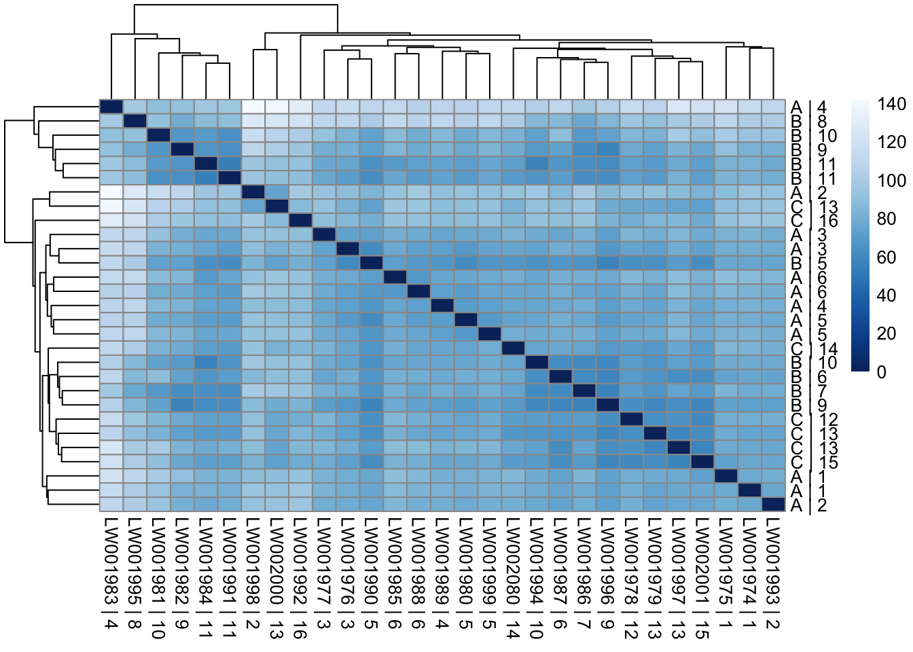
| Version | Author | Date |
|---|---|---|
| 05f5502 | sdhutchins | 2023-08-16 |
sample_dists_all <- dist(t(assay(vsd_limma)))
sample_dist_matrix_all <- as.matrix(sample_dists_all)
rownames(sample_dist_matrix_all) <- paste(vsd_limma$Batch, vsd_limma$Affected, sep = " | ")
colnames(sample_dist_matrix_all) <- paste(vsd_limma$ID, vsd_limma$Affected, sep = " | ")
colors <- colorRampPalette(rev(brewer.pal(9, "Blues")))(255)
pheatmap(sample_dist_matrix_all, clustering_distance_rows = sample_dists_all, clustering_distance_cols = sample_dists_all, col = colors)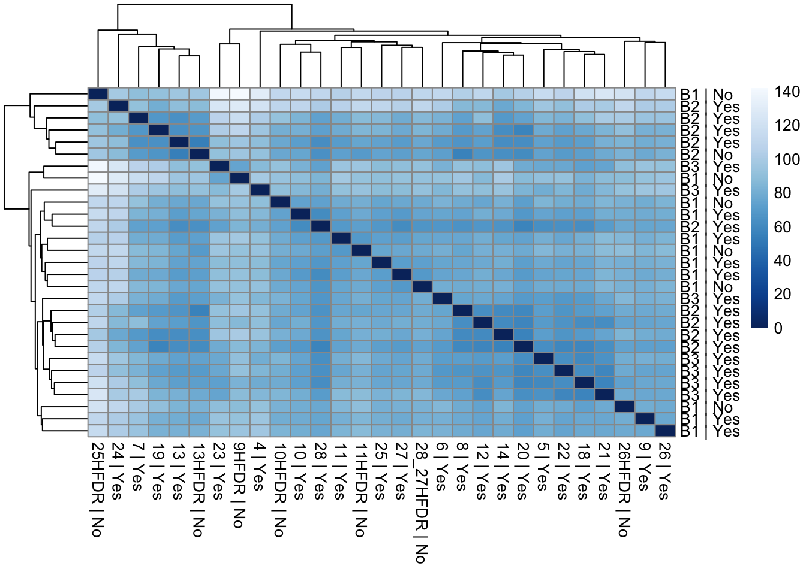
Principal Components Analysis
Our below PCA shows that there does not seem to be a batch-related effect occurring after using limma. However, we can see that our 3 male samples are grouping. Given this knowledge, removing them from downstream analyses is the best option.
pca_data_all <- plotPCA(vsd_limma, intgroup = c("Batch", "Affected", "Sex"), returnData = TRUE)
percent_var_all <- round(100 * attr(pca_data_all, "percentVar"))
ggplot(pca_data_all, aes(PC1, PC2)) +
geom_point(aes(colour = Affected, fill = Sex, shape = Batch), size = 4) +
scale_shape_manual(values = c(21, 22, 23) )+
scale_fill_manual(values = c("white","gray"))+
scale_color_manual(values=c("blue","red"))+
geom_text(aes(label = name),
data = subset(pca_data_all, PC2 < -18 | PC1 < -30 ),
vjust = -1, hjust = 0.5, size = 2.5
) +
xlab(paste0("PC1: ", percent_var_all[1], "% variance")) +
ylab(paste0("PC2: ", percent_var_all[2], "% variance")) +
coord_fixed()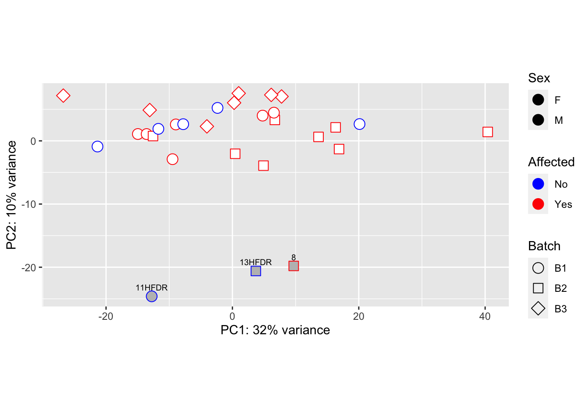
Below is PCA with only female samples.
pca_data_female <- plotPCA(vsd_limma_female, intgroup = c("Batch", "Affected"), returnData = TRUE)
percent_var_female <- round(100 * attr(pca_data_female, "percentVar"))
ggplot(pca_data_female, aes(PC1, PC2)) +
geom_point(aes(shape = Batch, colour = Affected), size = 4) +
scale_color_manual(values=c("blue","red")) +
geom_text(aes(label = name),
data = subset(pca_data_female, PC2 < -15 | PC1 > 25 | PC1 < -40 ),
vjust = -1, hjust = 0.5, size = 2.5
) +
xlab(paste0("PC1: ", percent_var_female[1], "% variance")) +
ylab(paste0("PC2: ", percent_var_female[2], "% variance")) +
coord_fixed()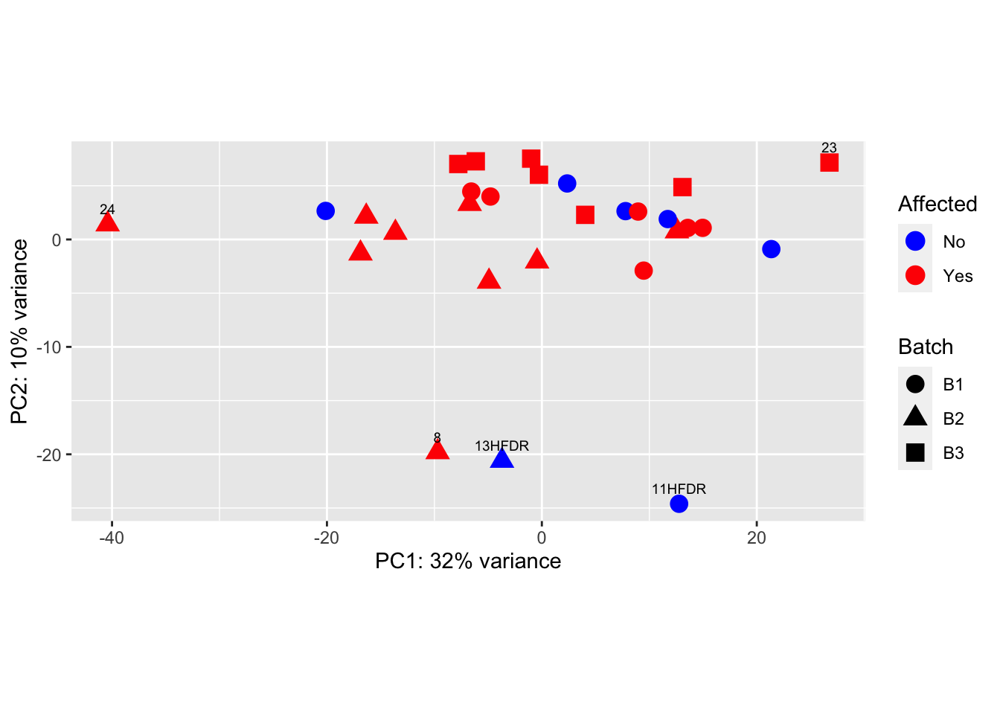
pca_data_anc <- plotPCA(vsd_limma_female, intgroup = c("Batch", "Affected", "Ancestry"), returnData = TRUE)
percent_var_anc <- round(100 * attr(pca_data_anc, "percentVar"))
ggplot(pca_data_anc, aes(PC1, PC2)) +
geom_point(aes(colour = Affected, fill = Ancestry, shape = Batch), size = 4) +
scale_shape_manual(values = c(21, 22, 23) )+
scale_fill_manual(values = c("greenyellow","khaki1"))+
scale_color_manual(values=c("blue","red"))+
geom_text(aes(label = name),
data = subset(pca_data_anc, Ancestry == "Black" ),
vjust = -1, hjust = 0.5, size = 2.5
) +
xlab(paste0("PC1: ", percent_var_anc[1], "% variance")) +
ylab(paste0("PC2: ", percent_var_anc[2], "% variance")) +
coord_fixed()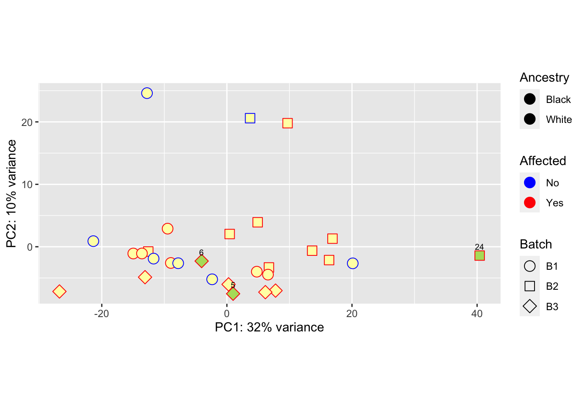
Heatmap of all genes, top 50 & top 100 genes
This is a heatmap for all genes across only female samples.
# Specify annotation colors by columns
# Use RColorBrewer::brewer.pal(n=10, name="Set1")
disease_colors <- c(
"Cryohydrocytosis" = "#8DD3C7",
"Gitelman Syndrome" = "#FFFFB3",
"Gitelman Syndrome & Thyrotoxic Periodic Paralysis" = "#BEBADA",
"Glycogen Storage Disease" = "#FB8072",
"Immunodeficiency/Autoinflammatory Diseases" = "#80B1D3",
"Immunodeficiency/Autoinflammatory Diseases & Mitochondrial Disorder" = "#FDB462",
"Mitochondrial Disorder" = "#B3DE69",
"N/A" = "#FCCDE5",
"Neurological/Neuromuscular Disorders" = "#D9D9D9",
"Stromme syndrome" = "#BC80BD",
"Thyrotoxic Periodic Paralysis" = "#CCEBC5",
"Unknown" = "#FFED6F"
)
category_colors <- c(
"Metabolism" = "#B3DE69",
"Immune" = "#FFFFB3",
"Channelopathies" = "#BEBADA",
"Misc:Mitochondria" = "#FB8072",
"Misc:Myosin family" = "#80B1D3",
"Misc:Ciliopathy" = "#FCCDE5",
"None" = "#FDB462"
)
# Specify colors
ann_colors = list(
Batch = c(B1 = "purple", B2 = "firebrick", B3 ="yellow"),
Affected = c(Yes = "green", No = "navy"),
Disease = disease_colors,
Category = category_colors
)
ann_colors2 = list(
Batch = c(B1 = "purple", B2 = "firebrick", B3 ="yellow"),
Affected = c(Yes = "green", No = "navy"),
Category = category_colors,
Disease = disease_colors
)
all_genes <- order(-rowVars(assay(vsd_limma_female)))
mat <- assay(vsd_limma_female)[all_genes, ]
mat <- mat - rowMeans(mat)
df <- as.data.frame(colData(vsd)[, c("Batch", "Affected", "Disease Group")])
#pheatmap(mat, annotation_col = df, annotation_colors = ann_colors, fontsize = 5)This is a heatmap of the top 50 genes with the highest variance across only female samples.
top_var_genes <- head(order(-rowVars(assay(vsd_limma_female))), 50)
mat <- assay(vsd_limma_female)[top_var_genes, ]
mat <- mat - rowMeans(mat)
df <- as.data.frame(colData(vsd_limma_female)[, c("Batch", "Affected", "Disease Group")])
ensembl_to_gene <- setNames(gene_info$gene_name, gene_info$Ensembl_ID)
# Get the current row names of the matrix 'mat'
current_ensembl_ids <- rownames(mat)
# Find the corresponding gene names for the Ensembl IDs
new_row_names <- ensembl_to_gene[current_ensembl_ids]
# Set the new row names for the matrix 'mat'
rownames(mat) <- new_row_names
pheatmap(mat, annotation_col = df, annotation_colors = ann_colors, fontsize = 5)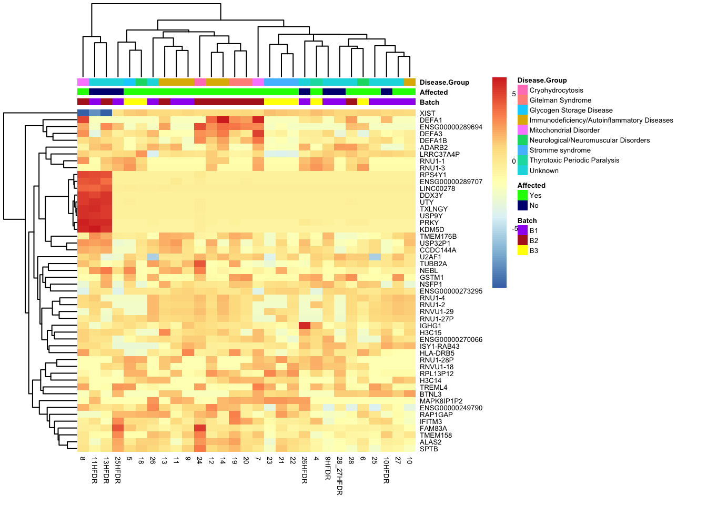
| Version | Author | Date |
|---|---|---|
| 05f5502 | sdhutchins | 2023-08-16 |
This is a heatmap of the top 50 genes with the highest variance across all samples.
top_var_genes_all <- head(order(-rowVars(assay(vsd_limma))), 50)
mat_all <- assay(vsd_limma)[top_var_genes_all, ]
mat_all <- mat_all - rowMeans(mat_all)
df_all <- as.data.frame(colData(vsd_limma)[, c("Batch", "Affected", "Category")])
df_affcat <- as.data.frame(colData(vsd_limma)[, c("Affected", "Category")])
ensembl_to_gene <- setNames(gene_info$gene_name, gene_info$Ensembl_ID)
# Get the current row names of the matrix 'mat'
current_ensembl_ids_all <- rownames(mat_all)
# Find the corresponding gene names for the Ensembl IDs
new_row_names_all <- ensembl_to_gene[current_ensembl_ids_all]
# Set the new row names for the matrix 'mat'
rownames(mat_all) <- new_row_names_all
pheatmap(mat_all, annotation_col = df_all, annotation_colors = ann_colors, fontsize = 5)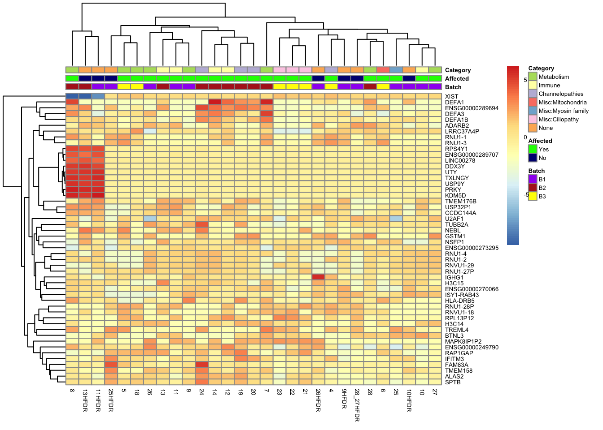
pheatmap(mat_all, annotation_col = df_affcat, annotation_colors = ann_colors2, fontsize = 5)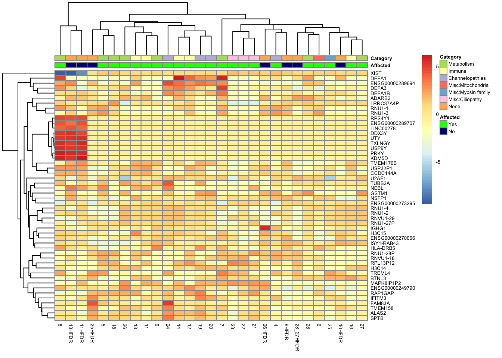
This is a heatmap of the top 100 genes with the highest variance across only female samples.
top_var_genes_100 <- head(order(-rowVars(assay(vsd_limma_female))), 100)
mat_100 <- assay(vsd_limma_female)[top_var_genes_100, ]
mat_100 <- mat_100 - rowMeans(mat_100)
df_100 <- as.data.frame(colData(vsd_limma_female)[, c("Batch", "Affected", "Category")])
ensembl_to_gene <- setNames(gene_info$gene_name, gene_info$Ensembl_ID)
# Get the current row names of the matrix 'mat'
current_ensembl_ids <- rownames(mat_100)
# Find the corresponding gene names for the Ensembl IDs
new_row_names <- ensembl_to_gene[current_ensembl_ids]
# Set the new row names for the matrix 'mat'
rownames(mat_100) <- new_row_names
pheatmap(mat_100, annotation_col = df_100, annotation_colors = ann_colors2, fontsize = 6)
| Version | Author | Date |
|---|---|---|
| 05f5502 | sdhutchins | 2023-08-16 |
This is a heatmap of the top 100 genes with the highest variance across all samples.
top_var_genes_100_all <- head(order(-rowVars(assay(vsd_limma))), 100)
mat_100_all <- assay(vsd_limma)[top_var_genes_100_all, ]
mat_100_all <- mat_100_all - rowMeans(mat_100_all)
df_100_all <- as.data.frame(colData(vsd_limma)[, c("Batch", "Affected", "Category")])
ensembl_to_gene <- setNames(gene_info$gene_name, gene_info$Ensembl_ID)
# Get the current row names of the matrix 'mat'
current_ensembl_ids_100_all <- rownames(mat_100_all)
# Find the corresponding gene names for the Ensembl IDs
new_row_names_100_all <- ensembl_to_gene[current_ensembl_ids_100_all]
# Set the new row names for the matrix 'mat'
rownames(mat_100_all) <- new_row_names_100_all
pheatmap(mat_100_all, annotation_col = df_100_all, annotation_colors = ann_colors2, fontsize = 6)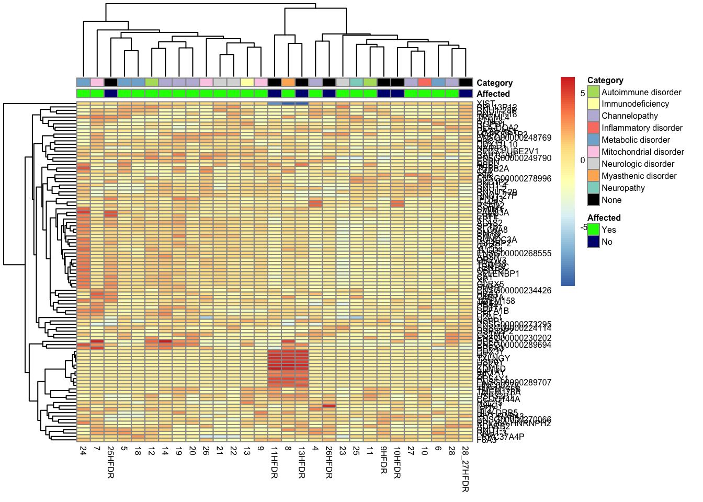
Comparison/Contrast of Affected_Yes_vs_No
res_aff_vs_unaff <- results(dds_female, contrast = c("Affected", "Yes", "No"))
res_aff_vs_unaff_df <- process_and_save_results(res_aff_vs_unaff,
"output/res_aff_vs_unaff.csv")
res_aff_vs_unaff_df <- arrange(res_aff_vs_unaff_df, padj)
res_aff_vs_unaff_df_05 <- subset(res_aff_vs_unaff_df, padj < 0.05)
summary(res_aff_vs_unaff)
out of 29624 with nonzero total read count
adjusted p-value < 0.1
LFC > 0 (up) : 34, 0.11%
LFC < 0 (down) : 30, 0.1%
outliers [1] : 162, 0.55%
low counts [2] : 6, 0.02%
(mean count < 0)
[1] see 'cooksCutoff' argument of ?results
[2] see 'independentFiltering' argument of ?resultsres_aff_vs_unaff_m <- results(dds, contrast = c("Affected", "Yes", "No"))
res_aff_vs_unaff_df_m <- process_and_save_results(res_aff_vs_unaff_m,
"output/res_aff_vs_unaff_m.csv")
res_aff_vs_unaff_df_m <- arrange(res_aff_vs_unaff_df_m, padj)
res_aff_vs_unaff_df_05_m <- subset(res_aff_vs_unaff_df_m, padj < 0.05)
res_aff_vs_unaff_df_1_m <- subset(res_aff_vs_unaff_df_m, padj < 0.05)
summary(res_aff_vs_unaff_m)
out of 29624 with nonzero total read count
adjusted p-value < 0.1
LFC > 0 (up) : 34, 0.11%
LFC < 0 (down) : 30, 0.1%
outliers [1] : 162, 0.55%
low counts [2] : 6, 0.02%
(mean count < 0)
[1] see 'cooksCutoff' argument of ?results
[2] see 'independentFiltering' argument of ?resultstopgenes_byensemblid <- head(rownames(res_aff_vs_unaff_df), 100)
topgenes_aff_vs_unaff_05 <- assay(vsd_limma_female)[topgenes_byensemblid, ]
topgenes_aff_vs_unaff_05 <- topgenes_aff_vs_unaff_05 - rowMeans(topgenes_aff_vs_unaff_05)
ensembl_to_gene <- setNames(gene_info$gene_name, gene_info$Ensembl_ID)
# Get the current row names of the matrix 'mat'
current_ensembl_ids <- rownames(topgenes_aff_vs_unaff_05)
# Find the corresponding gene names for the Ensembl IDs
new_row_names <- ensembl_to_gene[current_ensembl_ids]
# Set the new row names for the matrix 'mat'
rownames(topgenes_aff_vs_unaff_05) <- new_row_names
topgenes_aff_vs_unaff_05 <- topgenes_aff_vs_unaff_05[order(row.names(topgenes_aff_vs_unaff_05)), ]
df <- colData(vsd_limma_female) %>% as.data.frame() %>% dplyr::select(Category)
pheatmap(topgenes_aff_vs_unaff_05, annotation_col = df, annotation_colors = ann_colors2, fontsize = 3)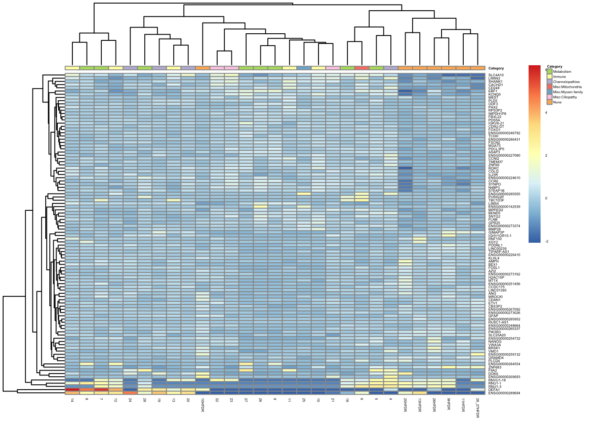
topgenes_byensemblid_m <- head(rownames(res_aff_vs_unaff_df_m), 100)
topgenes_aff_vs_unaff_05_m <- assay(vsd_limma)[topgenes_byensemblid_m, ]
topgenes_aff_vs_unaff_05_m <- topgenes_aff_vs_unaff_05_m - rowMeans(topgenes_aff_vs_unaff_05_m)
ensembl_to_gene_m <- setNames(gene_info$gene_name, gene_info$Ensembl_ID)
# Get the current row names of the matrix 'mat'
current_ensembl_ids_m <- rownames(topgenes_aff_vs_unaff_05_m)
# Find the corresponding gene names for the Ensembl IDs
new_row_names_m <- ensembl_to_gene_m[current_ensembl_ids_m]
# Set the new row names for the matrix 'mat'
rownames(topgenes_aff_vs_unaff_05_m) <- new_row_names_m
topgenes_aff_vs_unaff_05_m <- topgenes_aff_vs_unaff_05_m[order(row.names(topgenes_aff_vs_unaff_05_m)), ]
df_m <- as.data.frame(colData(vsd_limma)[, c("Affected", "Category")])
pheatmap(topgenes_aff_vs_unaff_05_m, annotation_col = df_m, annotation_colors = ann_colors2, fontsize = 3)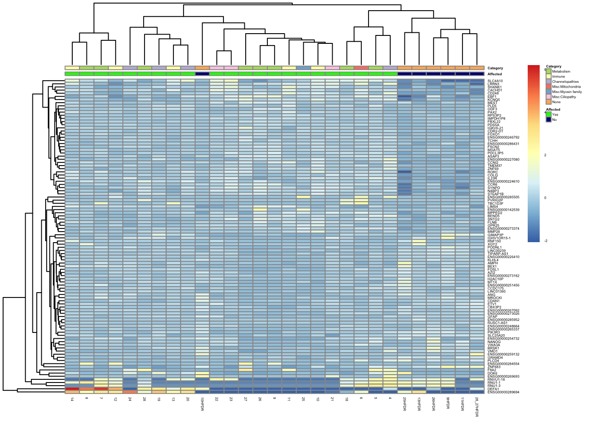
topgenes_byensemblid_m <- head(rownames(res_aff_vs_unaff_df_m), 50)
topgenes_aff_vs_unaff_05_m <- assay(vsd_limma)[topgenes_byensemblid_m, ]
topgenes_aff_vs_unaff_05_m <- topgenes_aff_vs_unaff_05_m - rowMeans(topgenes_aff_vs_unaff_05_m)
ensembl_to_gene_m <- setNames(gene_info$gene_name, gene_info$Ensembl_ID)
# Get the current row names of the matrix 'mat'
current_ensembl_ids_m <- rownames(topgenes_aff_vs_unaff_05_m)
# Find the corresponding gene names for the Ensembl IDs
new_row_names_m <- ensembl_to_gene_m[current_ensembl_ids_m]
# Set the new row names for the matrix 'mat'
rownames(topgenes_aff_vs_unaff_05_m) <- new_row_names_m
topgenes_aff_vs_unaff_05_m <- topgenes_aff_vs_unaff_05_m[order(row.names(topgenes_aff_vs_unaff_05_m)), ]
df_m <- df <- colData(vsd_limma) %>% as.data.frame() %>% dplyr::select(Affected, Family, Category)
pheatmap(topgenes_aff_vs_unaff_05_m, annotation_col = df_m, annotation_colors = ann_colors2, fontsize = 5)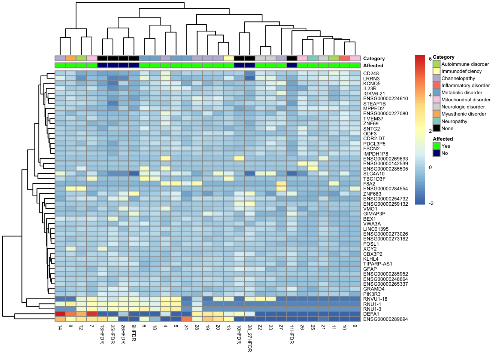
topgenes_byensemblid_m <- head(rownames(res_aff_vs_unaff_df_m), 200)
topgenes_aff_vs_unaff_05_m <- assay(vsd_limma)[topgenes_byensemblid_m, ]
topgenes_aff_vs_unaff_05_m <- topgenes_aff_vs_unaff_05_m - rowMeans(topgenes_aff_vs_unaff_05_m)
ensembl_to_gene_m <- setNames(gene_info$gene_name, gene_info$Ensembl_ID)
# Get the current row names of the matrix 'mat'
current_ensembl_ids_m <- rownames(topgenes_aff_vs_unaff_05_m)
# Find the corresponding gene names for the Ensembl IDs
new_row_names_m <- ensembl_to_gene_m[current_ensembl_ids_m]
# Set the new row names for the matrix 'mat'
rownames(topgenes_aff_vs_unaff_05_m) <- new_row_names_m
topgenes_aff_vs_unaff_05_m <- topgenes_aff_vs_unaff_05_m[order(row.names(topgenes_aff_vs_unaff_05_m)), ]
df_m <- as.data.frame(colData(vsd_limma)[, c("Affected", "Category")])
pheatmap(topgenes_aff_vs_unaff_05_m, annotation_col = df_m, annotation_colors = ann_colors2, fontsize = 1.5)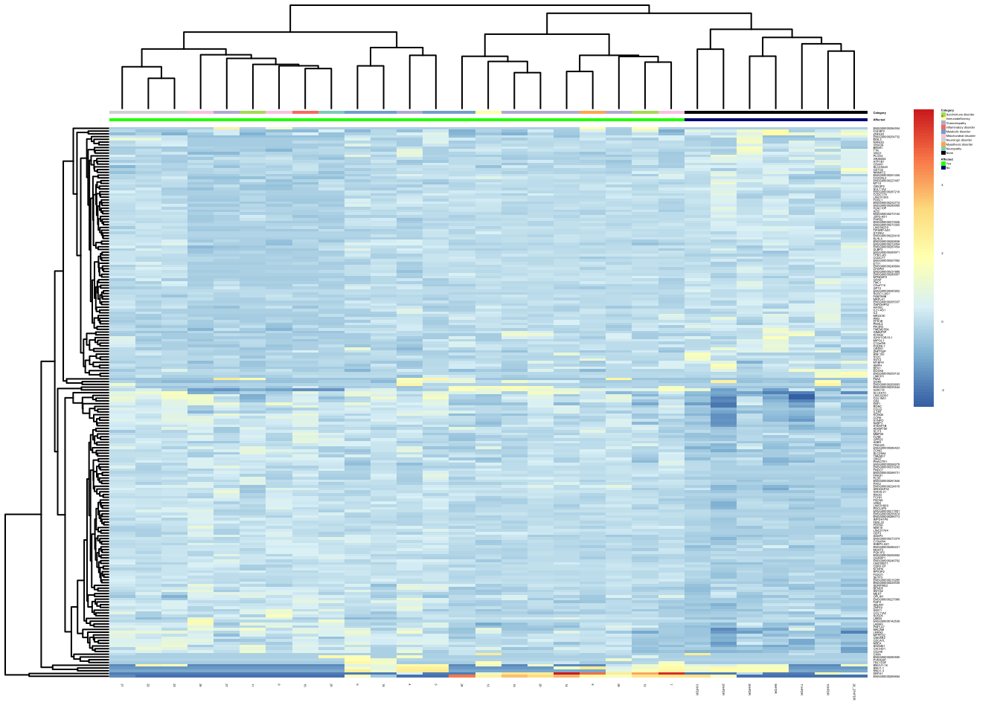
topgenes_byensemblid_m <- head(rownames(res_aff_vs_unaff_df_m), 150)
topgenes_aff_vs_unaff_05_m <- assay(vsd_limma)[topgenes_byensemblid_m, ]
topgenes_aff_vs_unaff_05_m <- topgenes_aff_vs_unaff_05_m - rowMeans(topgenes_aff_vs_unaff_05_m)
ensembl_to_gene_m <- setNames(gene_info$gene_name, gene_info$Ensembl_ID)
# Get the current row names of the matrix 'mat'
current_ensembl_ids_m <- rownames(topgenes_aff_vs_unaff_05_m)
# Find the corresponding gene names for the Ensembl IDs
new_row_names_m <- ensembl_to_gene_m[current_ensembl_ids_m]
# Set the new row names for the matrix 'mat'
rownames(topgenes_aff_vs_unaff_05_m) <- new_row_names_m
#topgenes_aff_vs_unaff_05_m <- topgenes_aff_vs_unaff_05_m[order(row.names(topgenes_aff_vs_unaff_05_m)), ]
df_m <- as.data.frame(colData(vsd_limma)[, c("Affected", "Category")])
pheatmap(topgenes_aff_vs_unaff_05_m, annotation_col = df_m, annotation_colors = ann_colors2, fontsize = 1.5)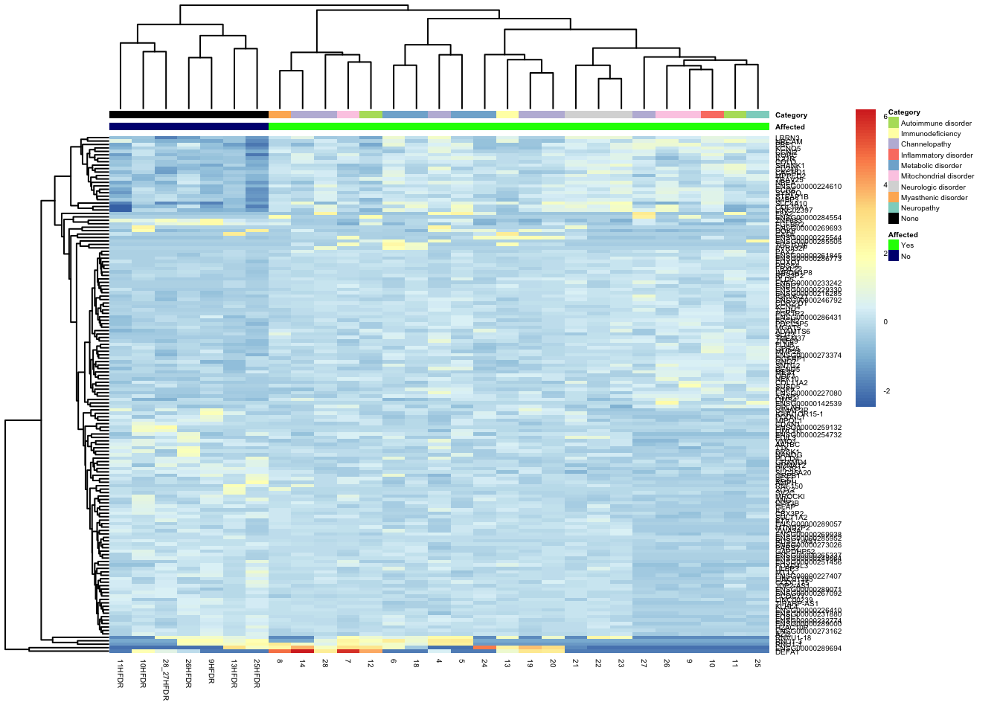
gb_df <- genes_biomart[, c(1, ncol(genes_biomart))]
res_aff_vs_unaff_df_genename <- res_aff_vs_unaff_df
res_aff_vs_unaff_df_genename$Ensembl_ID <- row.names(res_aff_vs_unaff_df)
res_aff_vs_unaff_df_genename <- merge(x = res_aff_vs_unaff_df_genename, y = gene_info, by.x = "Ensembl_ID", by.y = "Ensembl_ID", all.x = TRUE)
res_aff_vs_unaff_df_genename <- res_aff_vs_unaff_df_genename[, c(dim(res_aff_vs_unaff_df_genename)[2], 1:dim(res_aff_vs_unaff_df_genename)[2] - 1)]
res_aff_vs_unaff_df_genename <- res_aff_vs_unaff_df_genename[order(res_aff_vs_unaff_df_genename[, "padj"]), ]
write.csv(res_aff_vs_unaff_df_genename, file = "output/res_aff_vs_unaff_genename.csv")gb_df <- genes_biomart[, c(1, ncol(genes_biomart))]
res_aff_vs_unaff_df_m_genename <- res_aff_vs_unaff_df_m
res_aff_vs_unaff_df_m_genename$Ensembl_ID <- row.names(res_aff_vs_unaff_df_m)
res_aff_vs_unaff_df_m_genename <- merge(x = res_aff_vs_unaff_df_m_genename, y = gene_info, by.x = "Ensembl_ID", by.y = "Ensembl_ID", all.x = TRUE)
res_aff_vs_unaff_df_m_genename <- res_aff_vs_unaff_df_m_genename[, c(dim(res_aff_vs_unaff_df_m_genename)[2], 1:dim(res_aff_vs_unaff_df_m_genename)[2] - 1)]
res_aff_vs_unaff_df_m_genename <- res_aff_vs_unaff_df_m_genename[order(res_aff_vs_unaff_df_m_genename[, "padj"]), ]
write.csv(res_aff_vs_unaff_df_m_genename, file = "output/res_aff_vs_unaff_df_m_genename.csv")res_aff_vs_unaff_df_genename_05 <- subset(res_aff_vs_unaff_df_m_genename, padj < 0.05)
res_aff_vs_unaff_df_genename_05 <- res_aff_vs_unaff_df_genename_05[order(res_aff_vs_unaff_df_genename_05$padj), ]
write.csv(res_aff_vs_unaff_df_genename_05, file = "output/res_aff_vs_unaff_df_genename_05.csv")
write.csv(res_aff_vs_unaff_df_05_m, file = "output/res_aff_vs_unaff_df_m_genename_05.csv")
res_aff_vs_unaff_df_genename_1 <- subset(res_aff_vs_unaff_df_m_genename, padj < 0.1)
res_aff_vs_unaff_df_genename_1 <- res_aff_vs_unaff_df_genename_1[order(res_aff_vs_unaff_df_genename_1$padj), ]
write.csv(res_aff_vs_unaff_df_genename_1, file = "output/res_aff_vs_unaff_df_genename_padj1.csv")Below is a table of information about the top genes.
library(mygene)
genes <- res_aff_vs_unaff_df_genename_05$gene_name
my_gene_data <- queryMany(genes, scopes = "symbol", fields = c("symbol", "name", "summary", species = "human"))Finished
Pass returnall=TRUE to return lists of duplicate or missing query terms.#paged_table(my_gene_data, options = list(rows.print = 15))filtered_gene_names <- res_aff_vs_unaff_df_m_genename$gene_name[!grepl("^ENS", res_aff_vs_unaff_df_m_genename$gene_name)]
# Select specific genes to show
# set top = 0, then specify genes using label.select argument
maplot <- ggmaplot(res_aff_vs_unaff_df_m,
main = "Affected vs Unaffected MA Plot",
fdr = .1, fc = 1, size = 0.4, # Same used for others.
genenames = as.vector(res_aff_vs_unaff_df_m_genename$gene_name),
ggtheme = ggplot2::theme_minimal(),
legend = "top", top = 20,
label.select = c("KCNQ5"),
font.label = c("bold", 5), label.rectangle = TRUE,
font.legend = "bold", font.main = "bold"
)
maplot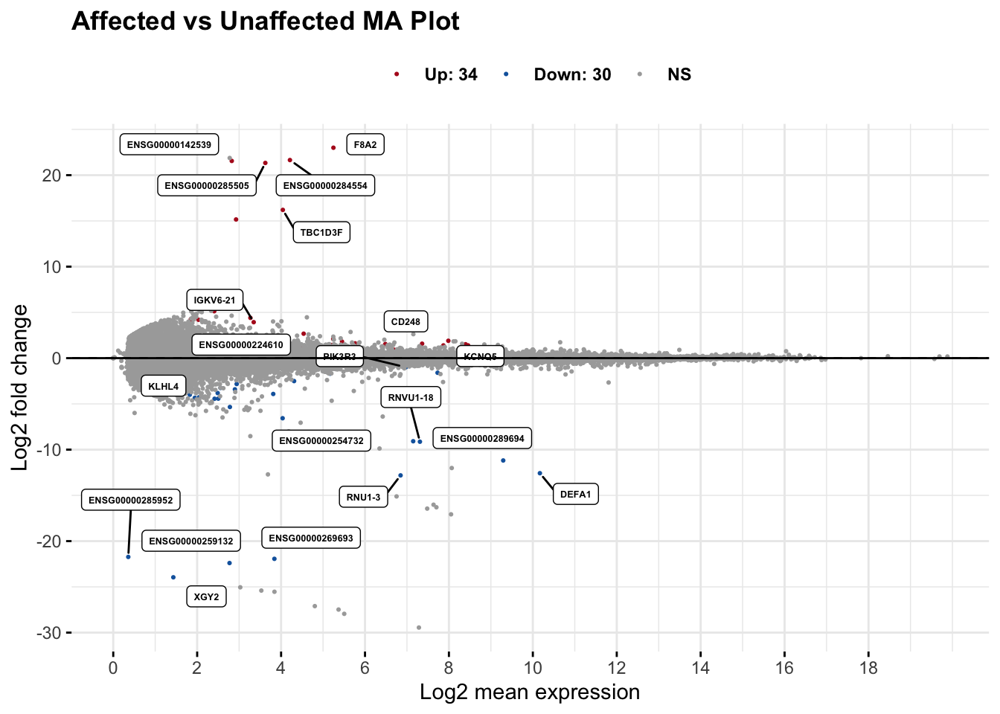
significant_data <- subset(maplot$data, grepl("Up|Down", sig))
paged_table(as.data.frame(significant_data), options = list(rows.print = 20))# Save significant genes
write.csv(significant_data, file = "output/res_aff_vs_unaff_significant_all_samples.csv", row.names = FALSE)Expression of Candidate Genes
Below is a table of expression of the genes identified during our WGS analysis.
8 of the genes were not included using DESeq2’s count filtering method (these genes had no counts):
“DPEP1”, “RERGL”, “TDO2”, “CCDC178”, “ADRA1D”, “AVPR1B”, “LRCOL1”, “KCNJ18”
# Subset gene_info using genes of interest
subset_gene_info <- gene_info[gene_info$gene_name %in% genes_of_interest, ]
filtered_by_interest <- filter(res_aff_vs_unaff_df_m_genename, Ensembl_ID %in% subset_gene_info$Ensembl_ID)
# Filtering the dataframe by row names
filtered_counts <- counts[row.names(counts) %in% subset_gene_info$Ensembl_ID, ]
# Match and update row names
matching_indices <- match(rownames(filtered_counts), subset_gene_info$Ensembl_ID)
# Update row names based on matching_column values from metadata
rownames(filtered_counts) <- subset_gene_info$gene_name[matching_indices]
missing_genes <- setdiff(subset_gene_info$Ensembl_ID, filtered_by_interest$Ensembl_ID)
corresponding_gene_names <- subset_gene_info$gene_name[subset_gene_info$Ensembl_ID %in% missing_genes]
missing_gene_counts <- counts[row.names(counts) %in% missing_genes, ]
paged_table(filtered_by_interest, options = list(rows.print = 15))paged_table(filtered_counts, options = list(rows.print = 15))Below is a heatmap highlighting the expression of our genes of interest across batch, disease group, and affected status.
mat2 <- assay(vsd_limma_female)[filtered_by_interest$Ensembl_ID, ]
rownames(mat2) <- gene_info$gene_name[match(filtered_by_interest$Ensembl_ID, gene_info$Ensembl_ID)]
df <- as.data.frame(colData(vsd_limma_female)[, c("Affected", "Category")])
pheatmap(mat2, annotation_col = df, annotation_colors = ann_colors2, fontsize = 4)
mat2 <- assay(vsd_limma)[filtered_by_interest$Ensembl_ID, ]
rownames(mat2) <- gene_info$gene_name[match(filtered_by_interest$Ensembl_ID, gene_info$Ensembl_ID)]
df_m <- as.data.frame(colData(vsd)[, c("Affected", "Category")])
pheatmap(mat2, annotation_col = df_m, annotation_colors = ann_colors2, fontsize = 4)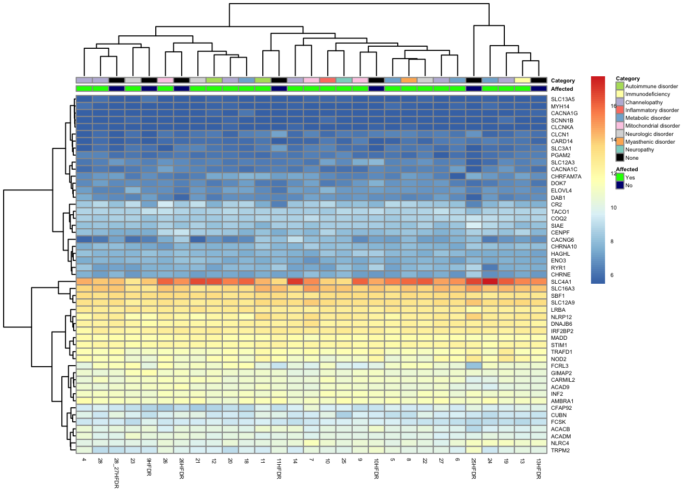
Enrichment analysis
#res <- gost(query = significant_data$name, organism = "hsapiens", significant = FALSE) # should significant be true or false?
#gostplot(res, capped = FALSE, interactive = TRUE)# #res <- gost(query = significant_data$name, organism = "hsapiens", significant = FALSE) # should significant be true or false?
#
# #gostplot(res, capped = FALSE, interactive = TRUE)
# # Get entrez id
#
# # Your existing code for obtaining geneList with Ensembl IDs
# rownames(res_aff_vs_unaff_df) <- gsub("\\..*", "", rownames(res_aff_vs_unaff_df))
# geneList <- res_aff_vs_unaff_df$log2FoldChange
# names(geneList) <- rownames(res_aff_vs_unaff_df)
#
# # Initialize BioMart
# ensembl <- useMart("ensembl", dataset = "hsapiens_gene_ensembl")
#
# # Convert all Ensembl IDs in geneList to Entrez IDs
# attributes <- c('ensembl_gene_id', 'entrezgene_id')
# filters <- 'ensembl_gene_id'
# results <- getBM(attributes = attributes, filters = filters, values = names(geneList), mart = ensembl)
#
# # Remove rows with NA or empty Entrez IDs
# results <- results[!is.na(results$entrezgene_id) & results$entrezgene_id != "",]
#
# # Create a new geneList with Entrez IDs
# geneList_entrez <- geneList[results$ensembl_gene_id]
# names(geneList_entrez) <- results$entrezgene_id
#
# # Filter genes with abs(log2FoldChange) > 2
# gene_entrez <- names(geneList_entrez)[abs(geneList_entrez) > 2]
# # Run enrichGO with Entrez IDs
# ego_cc <- enrichGO(gene = gene_entrez,
# universe = names(geneList_entrez),
# OrgDb = org.Hs.eg.db,
# ont = "CC",
# pAdjustMethod = "BH",
# pvalueCutoff = 0.01,
# qvalueCutoff = 0.05,
# readable = TRUE)
#
# # Plot results
# barplot(ego_cc, showCategory=10) + ggthemes::theme_clean()
#
#
# ego_bp <- enrichGO(gene = gene_entrez,
# universe = names(geneList_entrez),
# OrgDb = org.Hs.eg.db,
# ont = "BP",
# pAdjustMethod = "BH",
# pvalueCutoff = 0.01,
# qvalueCutoff = 0.05,
# readable = TRUE)
#
# # Plot results
# barplot(ego_bp, showCategory=10) + ggthemes::theme_clean()
#
#
# ego_mf <- enrichGO(gene = gene_entrez,
# universe = names(geneList_entrez),
# OrgDb = org.Hs.eg.db,
# ont = "MF",
# pAdjustMethod = "BH",
# pvalueCutoff = 0.01,
# qvalueCutoff = 0.05,
# readable = TRUE)
#
# # Plot results
# barplot(ego_mf, showCategory=10) + ggthemes::theme_clean()
# ```
#
# ```{r, enrichplot}
# top_genes_df <- res_aff_vs_unaff_df[order(-abs(res_aff_vs_unaff_df$log2FoldChange)), ]
# top_20_genes <- rownames(top_genes_df)[1:20]
#
# # Enriched via DisGeNet
# edo <- enrichDGN(gene_entrez)
# barplot(edo, showCategory=20) # upsetplot(ego_mf)# For loop for plot counts
# for (ensembl_id in filtered_by_interest$Ensembl_ID) {
# d <- plotCounts(dds_female, gene=ensembl_id, intgroup="Affected", returnData=TRUE)
# gene_name <- filtered_by_interest$gene_name[filtered_by_interest$Ensembl_ID == ensembl_id]
# ggplot_box <- ggboxplot(d, x="Affected", y="count", add = "jitter", color = "Affected", palette = c("navy", "red"), title = gene_name) + geom_text_repel(aes(label = rownames(d)))
# print(ggplot_box) # Ensure each plot is printed during the loop
# }Save data
save.image(file = "output/condition-analysis.RData")
sessionInfo()R version 4.3.2 (2023-10-31)
Platform: x86_64-apple-darwin20 (64-bit)
Running under: macOS Sonoma 14.2.1
Matrix products: default
BLAS: /Library/Frameworks/R.framework/Versions/4.3-x86_64/Resources/lib/libRblas.0.dylib
LAPACK: /Library/Frameworks/R.framework/Versions/4.3-x86_64/Resources/lib/libRlapack.dylib; LAPACK version 3.11.0
locale:
[1] en_US.UTF-8/en_US.UTF-8/en_US.UTF-8/C/en_US.UTF-8/en_US.UTF-8
time zone: America/Chicago
tzcode source: internal
attached base packages:
[1] stats4 stats graphics grDevices utils datasets methods
[8] base
other attached packages:
[1] mygene_1.36.0 GenomicFeatures_1.52.2
[3] ggrepel_0.9.4 UpSetR_1.4.0
[5] org.Hs.eg.db_3.17.0 AnnotationDbi_1.62.2
[7] DOSE_3.26.2 clusterProfiler_4.8.3
[9] ggupset_0.3.0.9002 rmarkdown_2.25
[11] ggpubr_0.6.0 plotly_4.10.3
[13] biomaRt_2.56.1 gprofiler2_0.2.2
[15] limma_3.56.2 genefilter_1.82.1
[17] pheatmap_1.0.12 RColorBrewer_1.1-3
[19] DESeq2_1.40.2 SummarizedExperiment_1.30.2
[21] Biobase_2.60.0 MatrixGenerics_1.12.3
[23] matrixStats_1.2.0 GenomicRanges_1.52.1
[25] GenomeInfoDb_1.36.4 IRanges_2.34.1
[27] S4Vectors_0.38.2 BiocGenerics_0.46.0
[29] lubridate_1.9.3 forcats_1.0.0
[31] stringr_1.5.1 dplyr_1.1.4
[33] purrr_1.0.2 readr_2.1.4
[35] tidyr_1.3.0 tibble_3.2.1
[37] ggplot2_3.4.4 tidyverse_2.0.0
loaded via a namespace (and not attached):
[1] fs_1.6.3 bitops_1.0-7 enrichplot_1.20.3
[4] HDO.db_0.99.1 httr_1.4.7 tools_4.3.2
[7] backports_1.4.1 utf8_1.2.4 R6_2.5.1
[10] lazyeval_0.2.2 withr_2.5.2 prettyunits_1.2.0
[13] gridExtra_2.3 cli_3.6.2 scatterpie_0.2.1
[16] labeling_0.4.3 sass_0.4.8 Rsamtools_2.16.0
[19] yulab.utils_0.1.1 gson_0.1.0 foreign_0.8-86
[22] rstudioapi_0.15.0 RSQLite_2.3.4 generics_0.1.3
[25] gridGraphics_0.5-1 BiocIO_1.10.0 vroom_1.6.5
[28] car_3.1-2 GO.db_3.17.0 Matrix_1.6-4
[31] fansi_1.0.6 abind_1.4-5 lifecycle_1.0.4
[34] whisker_0.4.1 yaml_2.3.8 carData_3.0-5
[37] qvalue_2.32.0 BiocFileCache_2.11.1 grid_4.3.2
[40] blob_1.2.4 promises_1.2.1 crayon_1.5.2
[43] lattice_0.22-5 cowplot_1.1.2 annotate_1.78.0
[46] KEGGREST_1.40.1 pillar_1.9.0 knitr_1.45
[49] fgsea_1.26.0 rjson_0.2.21 codetools_0.2-19
[52] fastmatch_1.1-4 glue_1.6.2 downloader_0.4
[55] ggfun_0.1.3 data.table_1.14.10 vctrs_0.6.5
[58] png_0.1-8 treeio_1.24.3 gtable_0.3.4
[61] gsubfn_0.7 cachem_1.0.8 xfun_0.41
[64] S4Arrays_1.0.6 tidygraph_1.3.0 survival_3.5-7
[67] nlme_3.1-164 ggtree_3.8.2 bit64_4.0.5
[70] progress_1.2.3 filelock_1.0.3 rprojroot_2.0.4
[73] bslib_0.6.1 rpart_4.1.23 colorspace_2.1-0
[76] DBI_1.1.3 Hmisc_5.1-1 nnet_7.3-19
[79] tidyselect_1.2.0 bit_4.0.5 compiler_4.3.2
[82] curl_5.2.0 chron_2.3-61 git2r_0.33.0
[85] htmlTable_2.4.2 xml2_1.3.6 DelayedArray_0.26.7
[88] shadowtext_0.1.2 rtracklayer_1.60.1 checkmate_2.3.1
[91] scales_1.3.0 rappdirs_0.3.3 digest_0.6.33
[94] XVector_0.40.0 htmltools_0.5.7 pkgconfig_2.0.3
[97] base64enc_0.1-3 highr_0.10 dbplyr_2.4.0
[100] fastmap_1.1.1 rlang_1.1.2 htmlwidgets_1.6.4
[103] farver_2.1.1 jquerylib_0.1.4 jsonlite_1.8.8
[106] BiocParallel_1.34.2 GOSemSim_2.26.1 RCurl_1.98-1.13
[109] magrittr_2.0.3 Formula_1.2-5 GenomeInfoDbData_1.2.10
[112] ggplotify_0.1.2 patchwork_1.1.3 munsell_0.5.0
[115] Rcpp_1.0.11 ape_5.7-1 viridis_0.6.4
[118] proto_1.0.0 sqldf_0.4-11 stringi_1.8.3
[121] ggraph_2.1.0 zlibbioc_1.46.0 MASS_7.3-60
[124] plyr_1.8.9 parallel_4.3.2 Biostrings_2.68.1
[127] graphlayouts_1.0.2 splines_4.3.2 hms_1.1.3
[130] locfit_1.5-9.8 igraph_1.6.0 ggsignif_0.6.4
[133] reshape2_1.4.4 XML_3.99-0.16 evaluate_0.23
[136] tzdb_0.4.0 tweenr_2.0.2 httpuv_1.6.13
[139] polyclip_1.10-6 ggforce_0.4.1 broom_1.0.5
[142] xtable_1.8-4 restfulr_0.0.15 tidytree_0.4.6
[145] rstatix_0.7.2 later_1.3.2 viridisLite_0.4.2
[148] aplot_0.2.2 memoise_2.0.1 GenomicAlignments_1.36.0
[151] cluster_2.1.6 workflowr_1.7.1 timechange_0.2.0